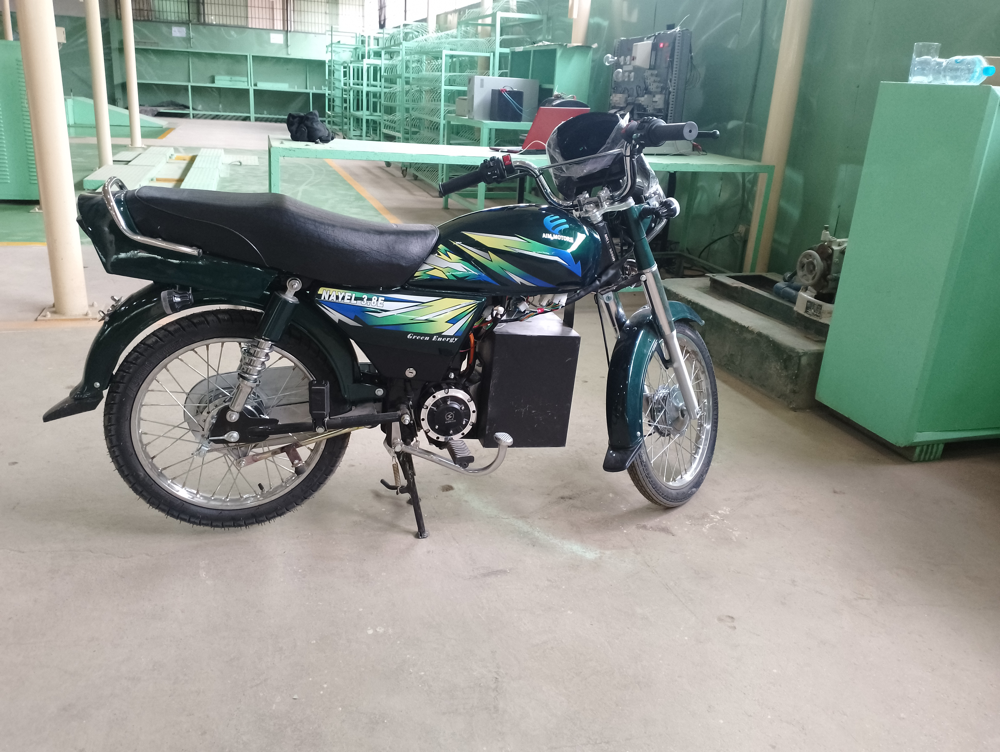
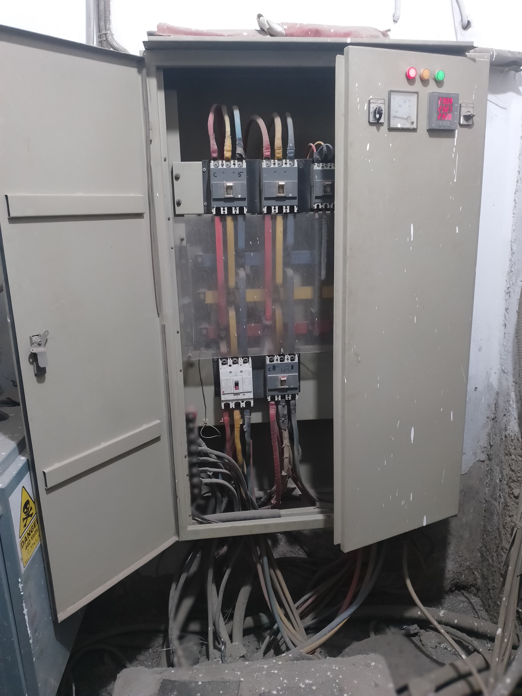
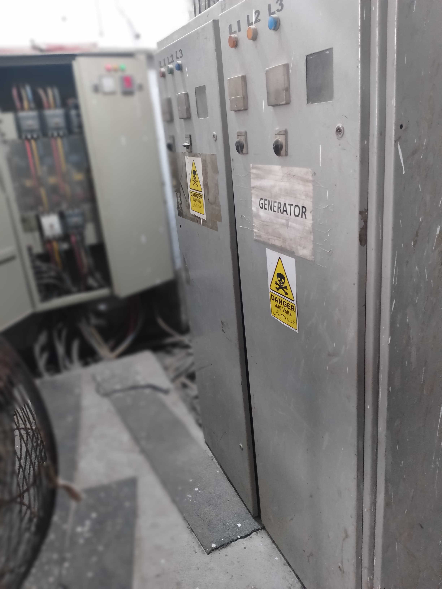
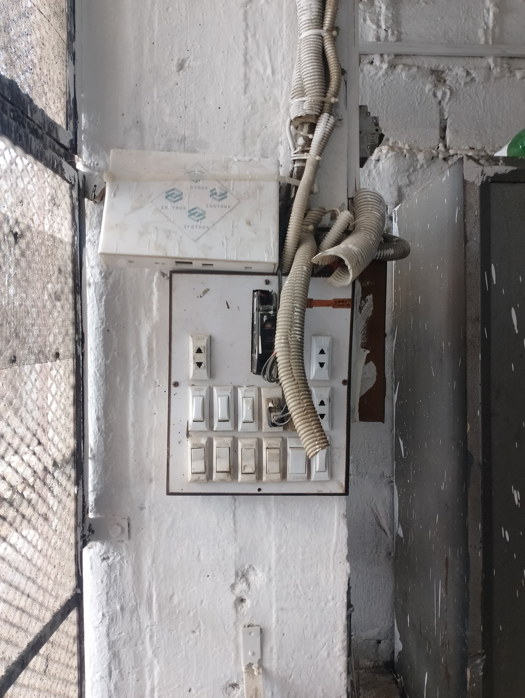

Dawlance
Conducted multiple visits to the industry for the deployment of the predictive maintenance system in the production line, ensuring seamless integration and optimal performance.

Conducted multiple visits to the industry for the deployment of the predictive maintenance system in the production line, ensuring seamless integration and optimal performance.
Visited the industry for the deployment of the energy monitoring system InstruX, implementing comprehensive monitoring solutions across the entire facility.


Conducted multiple visits to the plant for setting up the production line of Electric Bikes, ensuring efficient manufacturing processes and quality control.

Conducted multiple visits to the plant for the installation of Energy Monitoring System InstruX and for its maintenance, ensuring optimal performance and reliability.


